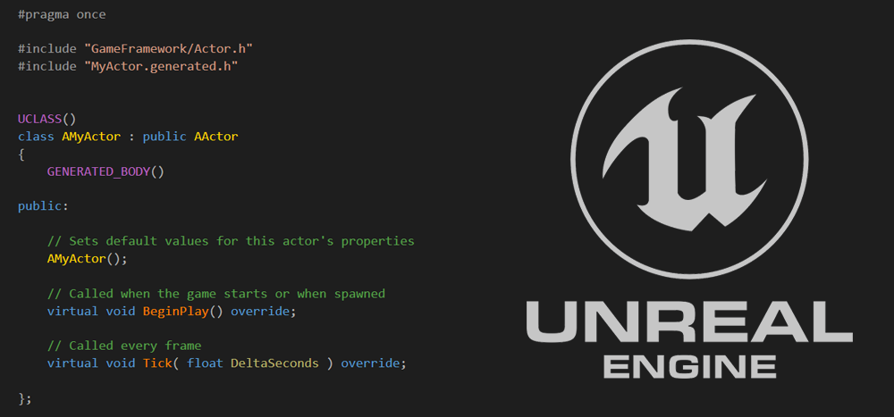

Programación en el Desarrollo de Videojuegos
¿Por qué la programación es importante?
La programación es el núcleo funcional de un videojuego. Permite crear la lógica que define cómo se comportan los personajes, los objetos, el entorno y cualquier elemento del juego. Sin programación, un videojuego sería únicamente una colección de imágenes sin interacción.
A través del código se implementan sistemas como el movimiento, las colisiones, los diálogos, la inteligencia artificial y las físicas. Es gracias a los programadores que el juego cobra vida y responde a las acciones del jugador.
Lenguajes más utilizados
Cada motor y plataforma puede utilizar distintos lenguajes de programación. Los más comunes en la industria son:
- C#: Unity lo utiliza porque es un lenguaje moderno, fácil de aprender y muy eficiente para desarrollo interactivo. Su sintaxis clara permite trabajar rápido y mantener el código organizado, ideal tanto para principiantes como para estudios profesionales.
- C++: Es usado en Unreal Engine debido a su gran potencia y control sobre memoria y rendimiento. Se utiliza en juegos AAA donde se requiere gráficos avanzados, físicas complejas y el máximo rendimiento posible.
- GDScript: Es el lenguaje principal de Godot. Se creó para ser sencillo y flexible, con una sintaxis parecida a Python. Facilita el aprendizaje y el prototipado rápido, especialmente para juegos 2D e indies.
- Python y Lua: Python se usa en proyectos educativos y pequeños prototipos porque es fácil de leer y escribir. Lua es común en engines y mods de juegos por su velocidad y ligereza, permitiendo modificar comportamientos sin tocar el motor principal.

Sistemas que se programan en un juego
Durante el desarrollo se implementan diferentes sistemas que permiten el correcto funcionamiento del juego. Algunos ejemplos son:
- Sistema de movimiento y control del jugador: Define cómo el personaje se desplaza y responde a las teclas, joystick o pantalla táctil. Incluye velocidad, saltos, giros, gravedad y cualquier forma de locomoción dentro del juego.
- Física y colisiones: Permite que los objetos del juego interactúen de forma realista. Por ejemplo, que el jugador no atraviese paredes, que caigan objetos, o que se aplique gravedad y rebotes.
- IA para enemigos o NPCs: Programa el comportamiento de personajes no controlados por el jugador. Puede ser algo simple como seguirte o algo avanzado como tomar decisiones, reaccionar al entorno y coordinar ataques.
- Inventarios y menús interactivos: Sistema que permite guardar y administrar objetos, armas o recursos. También maneja las interfaces de usuario como menús de inicio, configuración, barras de vida, etc.
- Eventos, misiones y diálogos: Controla la lógica narrativa y las misiones del juego. Incluye diálogos, escenas, activación de eventos al cumplir objetivos y progreso de la historia.
Importancia del trabajo en equipo
La programación rara vez se realiza sola. En la mayoría de proyectos, varios programadores trabajan organizados en áreas específicas, como mecánicas, herramientas internas, optimización o redes. La comunicación y organización son esenciales para mantener un proyecto funcional y escalable.
Un buen programador de videojuegos no solo escribe código, sino que también colabora con artistas, diseñadores y músicos para lograr un producto final consistente y agradable.